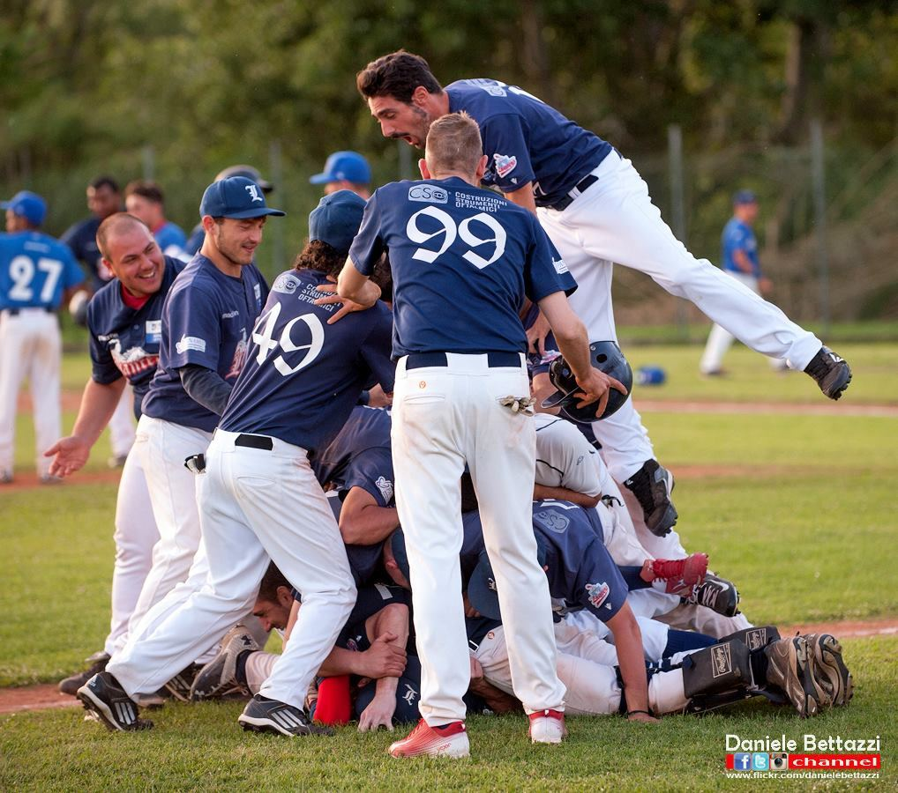
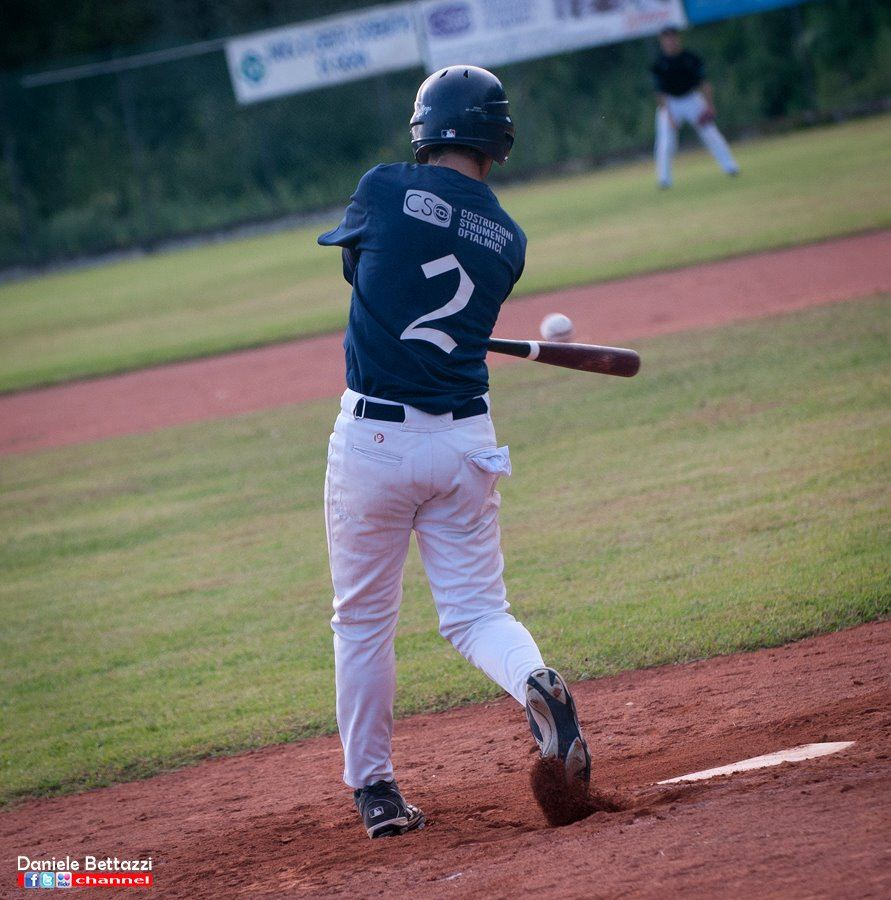

Dopo i successi esterni sul Livorno nella prima giornata domenica è arrivata la seconda doppietta in campionato per i Lancers grazie alla difficili vittorie casalinghe sul Lucca.
Gara 1 è sicuramente più agile per i lastrigiani che, eccetto i primi due inning di stallo, restano in vantaggio per l’intero incontro, fatale per i lucchesi il terzo attacco quando i ragazzi di Gentilini e Ciappi segnano ben 4 punti.
Al settimo, sul punteggio di 6 a 1 per i bianco blu, gli ospiti accennano una ripresa segnando 2 punti, ne arrivano poi altri 2 all’ottavo; i Lancieri rispondono con 3 run nella parte basse dello stesso attacco.
Il nono inning viene chiuso agilmente subendo un solo punto che fissa quindi il risultato finale sul 6-9 per i padroni di casa, ottima prova del partente Vannini in sette riprese e altra gran prova di Pistol che in due inning lascia al piatto 5 battitori.
Nel box si fanno sentire Geri, Bosi e Diaz con due hit ciascuno e il duo Baratella-Albano con 2 Rbi a testa.
Il secondo incontro è sconsigliato ai più deboli di cuore, anche questa volte occorrono 3 inning perc sbloccare la partita che in questa caso è per opera dell’attacco lucchese che segna ben 4 punti al quarto.
I Lancieri rispondono prontamente con due uomini portati a punto nella parte bassa dello stesso ma il Lucca sfrutta il momento favorevole segnandone altri 4 nel quinto e portandosi ad inizio sesto sull’8 a 3.
Inizia una lenta e difficile risalita dei lastrigiani, spronati da Gentilini e Ciappi a recuperare una partita dai mille volti.
Al sesto attacco si accorcia le distanze con altri due punti e al settimo, dopo aver lasciato a secco il Lucca, arriva il tanto sperato pareggio con 3 segnature.
Gli ultimi due inning mettono a dura prova le coronarie dei presenti, il pubblico di casa si dimostra ancora una volta il decimo uomo e proprio grazie a questo entusiasmo i Lancieri lanciano il cuore oltre l’ostacolo.
Il Lucca segna tre volte nell’inning numero otto, i Lancers rispondono a suon di bastonate portandosi in vantaggio per 12-11 nella stessa ripresa.
Inizia così l’ultimo capitolo di questo incontro; i lastrigiani sono chiamati a difendere il vantaggio ma una difesa poco attenta e poca fortuna ci costringono a subire altri tre punti, il Lucca si porta avanti di 2 lunghezze.

Ultimo attacco bianco blu, ultima possibilità di difendere il proprio campo.
Il monte ospite è sempre meno preciso ed i Lancers sfruttano nel migliore dei modi il momento, arriva prima il punto del momentaneo 13-14, successivamente si riempiono le basi con zero out e nel box si presenta il giovane Becattini.
Con la freddezza del veterano, il nostro Manuelino, colpisce una valida sopra l’interbase che fa correre a punto Gentilini (subentrato ad Albano come pinch runner) e Degl’Innocenti.
Vittoria di cuore e orgoglio per una partita sicuramente non perfetta e che dovrà far riflettere i ragazzi sui tanti errori, ma ancora una volta abbiamo dimostrato che giocando l’uno per l’altro i risultati possono arrivare anche nei momenti più difficili.
Sul monte si sono alternati Bosi e Pistol (entrambi buona prova macchiata da qualche errore in difesa), Apata, e Vannuzzi che risulterà il lanciatore vincente; in battuta Parrini, Albano e Nannucci registrano 3 valide ciascuno, con 2 hit bene anche Degl’Innocenti, Diaz, Becattini e Nerbini con quest’ultimo che registrerà ben 4 Rbi.
Prossimo impegno sul campo del Poviglio che, grazie al doppio successo con lo Junior Parma, si è guadagnato la testa della classifica.